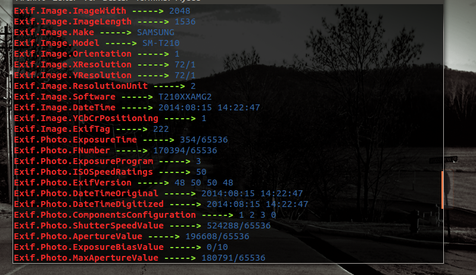
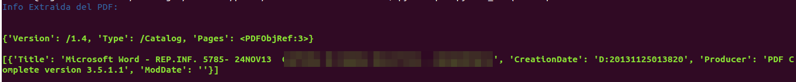
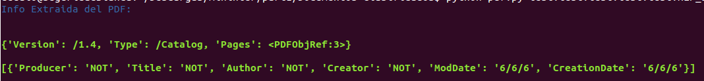
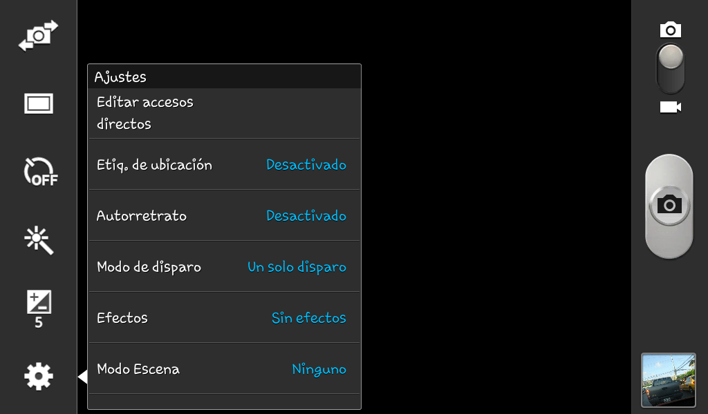
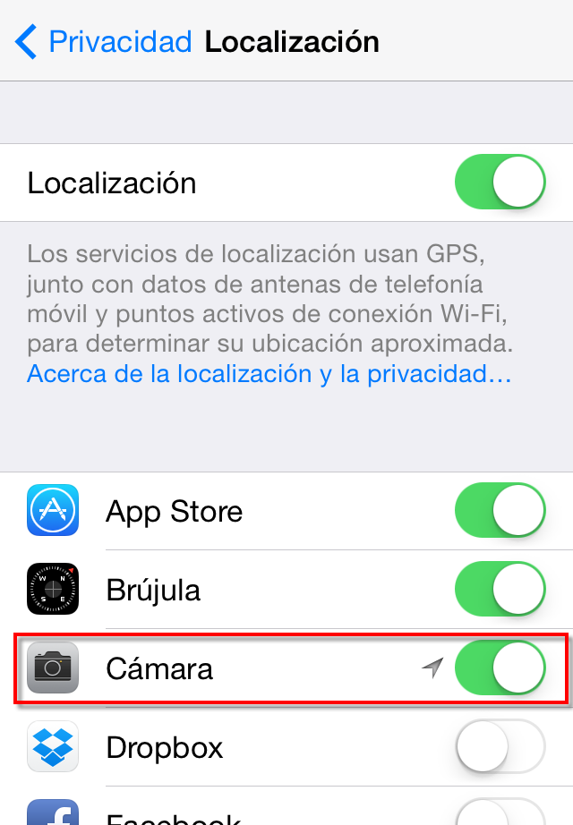
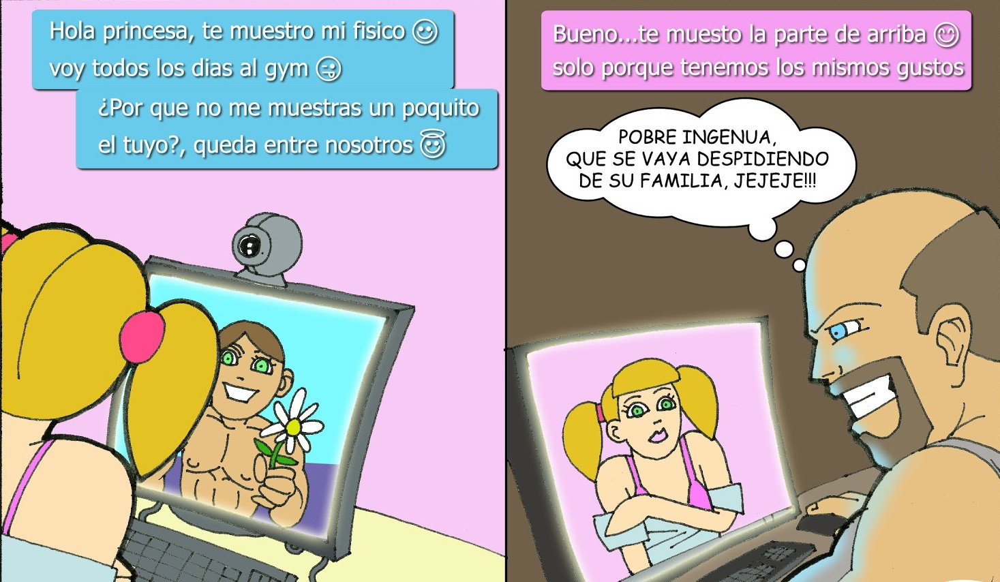

Mas allá de lo que vemos.
¿Quien soy?
Jhonn Vinces
Amante de la seguridad e inseguridad informática.
Curioso – Autodidacta - Divulgador - CryptoParty
@javierJB
Mi Familia - Mis Amigos.
¿QUE ES METADATA?
“Mas allá de la información”.
¿Y esto cómo influye en tu vida tecnológica o cotidiana?
A veces los mejores hackers caen por las cosas más sencillas.
Bombardeado por subir un "selfie"
¿EN DONDE ENCONTRAMOS METADATOS?
¿QUE PODEMOS OBSERVAR EN LOS METADATOS O DATOS OCULTOS DE UN ARCHIVO?
-Marca Del dispositivo.
-La versión o Modelo.
-Programa que se uso.
-Hora.
-Fecha.
-Lugar Geográfico.
-ENTRE OTROS.
Herramientas para leer y sobrescribir metadatos
Linux
-FotoFuenteProtector.
-pwat(pdf).
Windows
-Foca.
-ExifCleaner.
Android
-Obscuracam.
¿Y PARA IOS WEON?


¿Una foto habla más de la cuenta?
Si no se toman los medidas necesarios, sí: una simple foto podría entregar información muy sensible a un atacante.
Metadatos de una foto.
DEMO...!!!!!
Y EN LOS ARCHIVOS PDF TAMBIEN SE PUEDE?
PWAT
Dependencias:
■ sudo apt-get install python-pdfrw
■ sudo apt-get install python-pdfminer
Descargar:
■ wget https://raw.githubusercontent.com/utero/P-WAT/master/pwat.py
Usar:
■ python pwat.py
FUNCION READ
FUNCION WRITE
DEMO...!!!!!
No des tanta información
Podemos concluir entonces que los archivos subidos a la nube pueden decir más de lo que se ve a simple vista.
CONSEJOS..!!!
-Si te vas de vacaciones o al motel y sacas fotos, relájate y disfrútalas. Las puedes subir con calma a las redes sociales cuando vuelvas a tu casa.
-Si las quieres compartir para que tus amigos las vean, antes de tomar fotografías deshabilita los permisos de ubicación para la cámara.
¿Como deshabilito los permisos de ubicación de la cámara en android?
EN IOS
Desde Ajustes, Privacidad, Localización:
Y por supuesto, recuerda no aceptar gente que no conozcas en las redes sociales. Nunca sabemos quién puede estar del otro lado.
